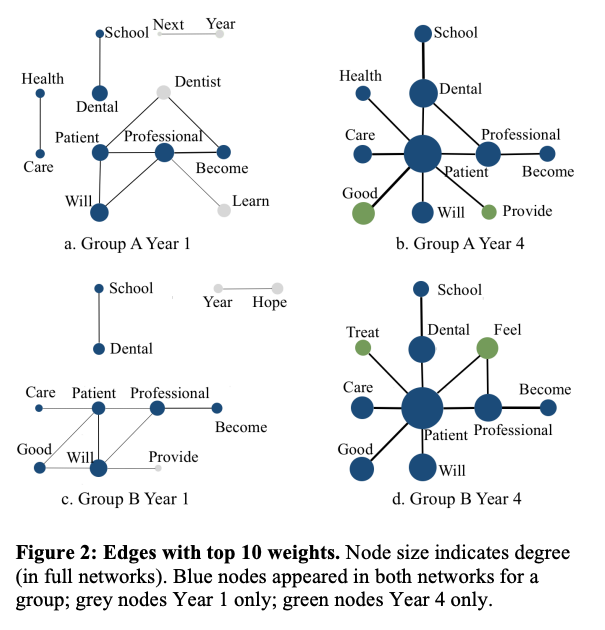

Three Levels of Consideration
Our discussion is aluding to three levels of considerations that researchers often need to be aware of. You could find more information in text such as [Niglas, 2010] or some other research methodology courses. Please note that this framework was constructed to help us grapple with the complex terrain of research, and it is highly debatable.
P
philosophy, worldviews, paradigms
m
methods/techniques
Below, I try to explain these three levels of considerations:
m, or methods/techniques: The “small m” in SNA constitutes methods or techniques we apply in SNA research. Imagine we are using SNA to investigate friendship of a network of high-schoolers (think about “Gossip Girls” if you’ve watched that TV series). A technique in this SNA research could be a questionnaire used to collect friendship data among students; it could be the force-directed layout we use to visualize this network; it could be the measure of betweenness centrality we use to characterize high-schoolers; it could also be a network modeling algorithm we apply to model the flow of gossips. In a nutshell, these techniques are more about what we concretely do in an SNA research.
M: When SNA is referred to as a “big M” Methodology, it is treated as a systematic approach of investigating a phenomenon. Beyond simply applying these techniques, a methodology is also concerned with why a technique gets used. In other words, understanding SNA as a methodology means learning to make informed decisions in any stage of an SNA project. For example, why using a questionnaire instead of observations or interviews? In which cases should one use a circle layout instead of a force-directed layout? Why a specific SNA measure is appropriate for addressing a research question? In a nutshell, the big M is concerned with how knowledge could be best gained by following many SNA methodologists and researchers have created so far.
P, worldviews, philosophical schools of thoughts, paradigms: In SNA, some scholars go further to argue SNA offers a unique way of “seeing the world.” In Carolan (2014) chapter 2 you will read about the relational perspective that represent a particular worldview that emphasizes relations instead of attributes. You will also read about relational realism that is referred to as an ontology grounding SNA. To a great extent, SNA offers a new research paradigm. As put by Barry Wellman, a guru in SNA from the University of Toronto, “It is a comprehensive paradigmatic way of taking social structure seriously by studying directly how patterns of ties allocate resources in a social system” (see, Carolan, 2014, p. 33).
In this course, we are mostly concerned with the “big M” level. We will not dive too deep into the P level, and we will not settle with specific techniques. Together, we will learn how to apply various techniques to systematically produce knowledge about a phenomenon.
Quantitative vs qualitative research: A false dichotomy
SNA was created from a rich qualitative tradition of sociology.
While SNA provides quantitative means to characterise structures, positions, and network processes, the quality and content of network ties matter for many investigations.
So far in this course, we have explored various ways SNA and Network Science can help us bridge qualitative and quantitative perspectives.
Social Network Analysis: Theory and Concepts#
Readings#
Scott, J. (2017). Social network analysis (4th edition) (Ch. 1). SAGE Publications.
Carolan, B. V. (2014). Social network analysis and education: Theory, methods & applications (Ch. 1-2). SAGE Publications.
Three Levels of Consideration#
Our discussion is aluding to three levels of considerations that researchers often need to be aware of. You could find more information in text such as [Niglas, 2010] or some other research methodology courses. Please note that this framework was constructed to help us grapple with the complex terrain of research, and it is highly debatable.
P#
philosophy, worldviews, paradigms
M#
methodology
m#
methods/techniques
Below, I try to explain these three levels of considerations:
m, or methods/techniques: The “small m” in SNA constitutes methods or techniques we apply in SNA research. Imagine we are using SNA to investigate friendship of a network of high-schoolers (think about “Gossip Girls” if you’ve watched that TV series). A technique in this SNA research could be a questionnaire used to collect friendship data among students; it could be the force-directed layout we use to visualize this network; it could be the measure of betweenness centrality we use to characterize high-schoolers; it could also be a network modeling algorithm we apply to model the flow of gossips. In a nutshell, these techniques are more about what we concretely do in an SNA research.
M: When SNA is referred to as a “big M” Methodology, it is treated as a systematic approach of investigating a phenomenon. Beyond simply applying these techniques, a methodology is also concerned with why a technique gets used. In other words, understanding SNA as a methodology means learning to make informed decisions in any stage of an SNA project. For example, why using a questionnaire instead of observations or interviews? In which cases should one use a circle layout instead of a force-directed layout? Why a specific SNA measure is appropriate for addressing a research question? In a nutshell, the big M is concerned with how knowledge could be best gained by following many SNA methodologists and researchers have created so far.
P, worldviews, philosophical schools of thoughts, paradigms: In SNA, some scholars go further to argue SNA offers a unique way of “seeing the world.” In Carolan (2014) chapter 2 you will read about the relational perspective that represent a particular worldview that emphasizes relations instead of attributes. You will also read about relational realism that is referred to as an ontology grounding SNA. To a great extent, SNA offers a new research paradigm. As put by Barry Wellman, a guru in SNA from the University of Toronto, “It is a comprehensive paradigmatic way of taking social structure seriously by studying directly how patterns of ties allocate resources in a social system” (see, Carolan, 2014, p. 33).
In this course, we are mostly concerned with the “big M” level. We will not dive too deep into the P level, and we will not settle with specific techniques. Together, we will learn how to apply various techniques to systematically produce knowledge about a phenomenon.
Quantitative vs qualitative research: A false dichotomy#
SNA was created from a rich qualitative tradition of sociology.
While SNA provides quantitative means to characterise structures, positions, and network processes, the quality and content of network ties matter for many investigations.
So far in this course, we have explored various ways SNA and Network Science can help us bridge qualitative and quantitative perspectives.
Examples of SNA in education#
Integration in emerging social networks explains academic failure and success [Stadtfeld et al., 2019]#
Setting: Student success in college
Problem/Questions: how social networks emerge between previously unacquainted students and how integration in these networks explains academic success
Data: Three waves of surveys
Network construction: Student networks of multiple types of ties
Analysis: 1) Descriptive network analysis; 2) bivariate correlations of social integration with GPA; 3) Linear regression models on GPA
“Connecting online”: The structure and content of students’ asynchronous online networks in a blended engineering class [Lee et al., 2021]#
Setting: Student interactions in online forums
Problem/Questions: What patterns of engagement are observed on the forum? How is engagement on forum related to academic performance?
Data: Interaction data on the online forum, transformed to a node list and an edge list
Network construction: Student networks of online interactions
Analysis: 1) Network-level descriptive analysis; 2) node degree centrality; 3) content analysis on discussion content; 4) regression analysis on degree centrality and course performance
Top Concept Networks of Professional Education Reflections [Wise and Cui, 2019]#
Setting: A four-year dental education program
Problem/Questions: How to capture a shift to a more integrated, patient-centered conceptualization of a health profession?
Data: reflective statements by students from the program
Network construction: Top concept networks, constructed by extracting key concepts, with a tie represents co-occurrence in a sentence
Analysis: 1) Identify top concepts, 2) Identify top connections between concepts, 3) Examine changes over four years.
